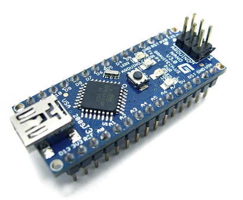

Software Lorem
Software Engineering Component of Our Project
We used arduino code to program our ArduinoNano. It takes sensor inputs and controls the 'visualizations'.
Breathing Sensing and Display - Arduino
Morbi mattis mi consectetur tortor elementum, varius pellentesque velit convallis. Aenean tincidunt lectus auctor mauris maximus, ac scelerisque ipsum tempor. Duis vulputate ex et ex tincidunt, quis lacinia velit aliquet. Duis non efficitur nisi, id malesuada justo. Maecenas sagittis felis ac sagittis semper. Curabitur purus leo, tempus sed finibus eget, fringilla quis risus. Maecenas et lorem quis sem varius sagittis et a est. Maecenas iaculis iaculis sem. Donec vel dolor at arcu tincidunt bibendum. Interdum et malesuada fames ac ante ipsum primis in faucibus. Fusce ut aliquet justo. Donec id neque ipsum. Integer eget ultricies odio. Nam vel ex a orci fringilla tincidunt. Aliquam eleifend ligula non velit accumsan cursus. Etiam ut gravida sapien.
Acceleration Sensing and Display - Arduino
Vestibulum ultrices risus velit, sit amet blandit massa auctor sit amet. Sed eu lectus sem. Phasellus in odio at ipsum porttitor mollis id vel diam. Praesent sit amet posuere risus, eu faucibus lectus. Vivamus ex ligula, tempus pulvinar ipsum in, auctor porta quam. Proin nec dui cursus, posuere dui eget interdum. Fusce lectus magna, sagittis at facilisis vitae, pellentesque at etiam. Quisque posuere leo quis sem commodo, vel scelerisque nisi scelerisque. Suspendisse id quam vel tortor tincidunt suscipit. Nullam auctor orci eu dolor consectetur, interdum ullamcorper ante tincidunt. Mauris felis nec felis elementum varius.
Distance Sensing and Display - Arduino
Praesent sit amet posuere risus, eu faucibus lectus. Vivamus ex ligula, tempus pulvinar ipsum in, auctor porta quam. Proin nec dui cursus, posuere dui eget interdum. Fusce lectus magna, sagittis at facilisis vitae, pellentesque at etiam. Quisque posuere leo quis sem commodo, vel scelerisque nisi scelerisque. Suspendisse id quam vel tortor tincidunt suscipit. Nullam auctor orci eu dolor consectetur, interdum ullamcorper ante tincidunt. Mauris felis nec felis elementum varius
Integration
Praesent sit amet posuere risus, eu faucibus lectus. Vivamus ex ligula, tempus pulvinar ipsum in, auctor porta quam. Proin nec dui cursus, posuere dui eget interdum. Fusce lectus magna, sagittis at facilisis vitae, pellentesque at etiam. Quisque posuere leo quis sem commodo, vel scelerisque nisi scelerisque. Suspendisse id quam vel tortor tincidunt suscipit. Nullam auctor orci eu dolor consectetur, interdum ullamcorper ante tincidunt. Mauris felis nec felis elementum varius
This Website
Our team's website was created using a javascript bootstrap template. We created the content, re-wrote the html, and modified the css from this template.
All final source code is available in our Github Repository. Git as well as shown in our appendix below.
Code Appendix
Arduino Control:Breathing-Acceleration-Distance.ino
#include
Servo servo_L;
Servo servo_R;
int servo_L_pos = 0;
int servo_R_pos = 0;
int brightness = 255;
int accelerometer_sensor_value = 0;
int breathing_sensor_value = 0;
int servo_out = 0; // value output to the PWM (analog out)
int accel_leds_out = 0; // value output to the PWM (analog out)
int breathing_leds_out = 0; // value output to the PWM (analog out)
int accel_threshold = 700; // voltage diff at which to turn LEDs on.
int distance_threshold = 250; // voltage diff at which to turn LEDs on.
int distance_max = 3000; // max voltage the distance sensor outputs.
unsigned long time;
const int numDistanceReadings = 5;
int distance_sensor_values[numDistanceReadings]; // the readings from the analog input
int distanceTotal = 0; // the running total
int distanceAverage = 0; // the average
// Define output pins (PWM)
const int servo_out_pin_L = 9;
const int servo_out_pin_R = 10;
const int accel_leds_out_pin = 3;
const int breathing_leds_out_pin = 5;
// Define input
const int distance_in_pin = A1;
const int accel_in_pin = A4;
const int breathing_in_pin = A5;
void setup()
{
Serial.begin(9600); // set up Serial library at 9600 bps
servo_L.attach(servo_out_pin_L);
servo_R.attach(servo_out_pin_R);
for (int thisReading = 0; thisReading < numDistanceReadings; thisReading++) {
distance_sensor_values[thisReading] = 0;
}
pinMode(accel_leds_out_pin, OUTPUT);
pinMode(breathing_leds_out_pin, OUTPUT);
}
// takes in current distance sensor in mV and returns the position of the servos.
int get_distance_out(int distance_in)
{
int output_value = 0;
int updown = 2000;
int restTime;
if (distance_in < 1000) {restTime = 3000;}
else if (distance_in < 1600) {restTime = 2000;}
else if (distance_in < 2200) {restTime = 1000;}
else {restTime = 0;}
if (time % (updown + restTime) < updown)
{
int difference = time % (updown + restTime) - (updown / 2);
if (difference < 0) {difference = -difference;} //
difference = updown / 2 - difference;
output_value = difference;
output_value = map(difference, 0, updown / 2, 0, 60);
}
return output_value;
}
// takes in current accelerometer sensor in mV and the output for the LEDs.
// If the object is moving fast, then the LEDs flicker.
int get_accel_out(int accel_in)
{
int diff = abs(accel_in - 2500);
int output_value = 0;
if (diff > accel_threshold)
{
output_value = 5000;
}
if (time % 1000 < 500)
{
output_value = 5000;
} else {
output_value = 0;
}
return output_value;
}
int get_breathing_out(int breathing_in)
{
return breathing_in;
}
void set_outputs(int servo_out, int accel_leds, int breathing_out)
{
analogWrite(accel_leds_out_pin, map(accel_leds, 0, 5000, 0, brightness));
// read the analog in value and covert them to millivolts:
distance_sensor_values[distanceReadIndex] = map(analogRead(distance_in_pin), 0, 1023, 0, 5000);
accelerometer_sensor_value = map(analogRead(accel_in_pin), 0, 1023, 0, 5000);
breathing_sensor_value = map(analogRead(breathing_in_pin), 0, 1023, 0, 5000);
Serial.print("Accelerometer value: ");
Serial.print(accelerometer_sensor_value);
Serial.print(". Breathing value: ");
Serial.print(breathing_sensor_value);
Serial.print(". Distance sensor value: ");
Serial.print(distanceTotal / numDistanceReadings);
distanceTotal = distanceTotal + distance_sensor_values[distanceReadIndex];
// distance_sensor_value = 700;
servo_out = get_distance_out(distanceTotal / numDistanceReadings);
accel_leds_out = get_accel_out(accelerometer_sensor_value);
breathing_leds_out = get_breathing_out(breathing_sensor_value);
set_outputs(servo_out,
accel_leds_out, breathing_leds_out);
Serial.print(". Servo output: ");
Serial.println(servo_out);
distanceReadIndex = distanceReadIndex + 1;
if (distanceReadIndex >= numDistanceReadings) {distanceReadIndex = 0;}
delay(100);
}